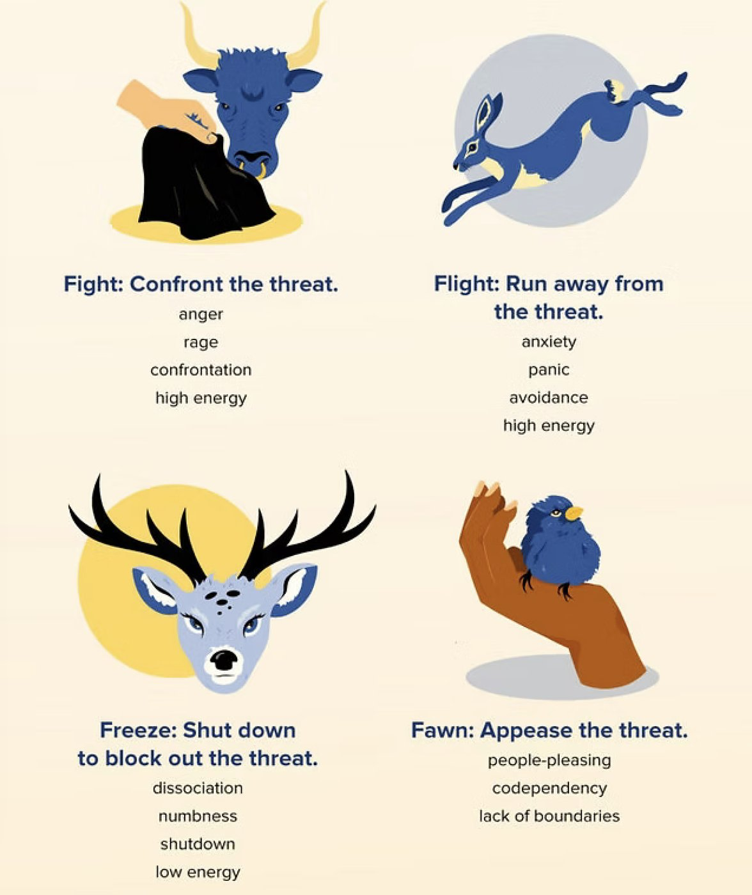

Understanding
What is Trauma?
A clear introduction to what trauma is, how it can affect the body and mind, and why healing is possible.
Read the articleResources
Honest, practical writing on the things clients ask me about most. New pieces added over time.

What anxiety is, where it lives in the mind and body, and practical, compassionate ways to begin turning down its volume.
Read the postWhat actually happens between therapist and client — and why the relationship itself is so much of the work.
Read the post
Using spring as a metaphor for growth — planting seeds of self-care, releasing winter’s weight, and building resilience.
Read the post
A mindful, CBT-informed take on authentic gratitude through the holidays — and how small shifts in perspective can lift the spirit.
Read the postMore posts in the From the Desk of a Psychotherapist series are on the way.
Forms & documents
If another medical or mental-health professional needs your permission to share information with me, this is the form to use. It authorizes them (the “custodian”) to disclose your personal health information to my practice, under Ontario’s Personal Health Information Protection Act (PHIPA).
Fillable PDF · PHIPA (2004) · fill it in on-screen, then print, save, or email it to the provider who needs to share information with me.
Prefer paper? You can also print the blank form and fill it out by hand. Questions about consent? Reach out any time.
Worth reading
A few trusted explainers I often point clients toward.
A clear introduction to what trauma is, how it can affect the body and mind, and why healing is possible.
Read the articleHow exploring past experiences and unconscious patterns can bring insight and lasting change (American Psychological Association).
Read the articleIf you need support right now
I’m not equipped to be a crisis-response service — but immediate help is available around the clock. The full list of crisis lines for Halton, Hamilton, and Ontario is on our crisis page.
See crisis resources